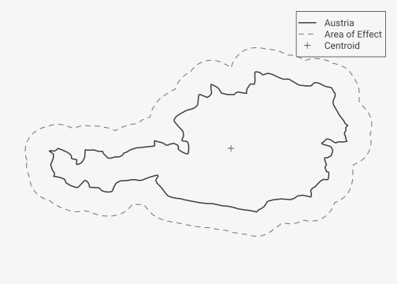
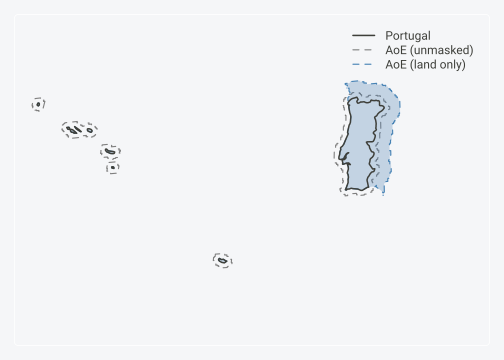

the area a point actually affects


Classify points as inside, near, or too far from a polygon boundary, with a buffer width that picks itself.
Give it points and a region. areaOfEffect labels each point core (inside), halo (in the buffer zone), or prunes it (too far), and it sizes the buffer for you: the default produces equal core and halo areas, a scale-free definition of “near the boundary” that means the same thing for Luxembourg and Brazil. Projection, buffering, and point-in-polygon are handled through sf under one call.
library(areaOfEffect)
observations <- data.frame(
id = c("A", "B", "C", "D"),
lon = c(14.5, 15.2, 16.8, 20.0),
lat = c(47.5, 48.1, 47.2, 48.5)
)
# classify relative to Austria
result <- aoe(observations, "Austria")
result$aoe_class
#> [1] "core" "core" "halo"
# (point D is pruned: outside the buffer zone)

A buffer width you don’t have to guess
The underlying sf workflow is well known: load a boundary, fix the CRS, st_buffer(), st_intersects(). The repetitive part is one function call. The harder part is the buffer distance. A 10 km buffer is most of Luxembourg and a rounding error for Brazil, so a fixed distance is not comparable across regions.
areaOfEffect solves for the distance instead of asking you to invent one. The default scale sqrt(2) - 1 is the unique value that makes the halo area equal the core area: it is the solution of (1 + s)^2 - 1 = 1, not a tuned constant. So “near the boundary” is defined by the geometry of the region, the same way everywhere.
library(sf)
# the hand-rolled version: you choose 10000 and hope it travels
buf <- st_buffer(st_geometry(austria), 10000)
near <- lengths(st_intersects(pts, st_difference(buf, austria))) > 0
# the equal-area version: the width is whatever makes core area == halo area
aoe(pts, "Austria")What’s in the box
-
aoe(): classify points as core, halo, or pruned against one or more supports. Pass a data frame with coordinates or ansfobject; pass a country name ("Austria","AT"), your own polygon, or nothing (countries are detected from the points). -
aoe_border(): classify points by side and distance from a line, with symmetric equal-area zones on each side (for example, either side of an international border). -
aoe_expand(): grow the buffer per support just enough to capture a minimum point count, under hard caps on area and distance. -
aoe_sample(): stratified sampling of a result by core/halo or by side, for balanced draws when one class dominates. -
aoe_summary(),aoe_area(),aoe_geometry(): counts and proportions per support, area statistics (halo:core ratio, masking effect), and the underlying AoE polygons for plotting.
Solving for area after masking
The default equal-area buffer extends into anything around the region, including ocean. For terrestrial data that area is wasted. The mask argument clips the halo to relevant areas, and the area argument then solves for the buffer that hits your target after clipping, so equal-area still holds on the land that remains.

# clip the halo to land using the bundled Natural Earth polygon
aoe(df, "Portugal", mask = "land")
# equal land area in core and halo, even where half the buffer would be sea
aoe(df, "Japan", mask = "land", area = 1)Without a mask the equal-area scale is analytic and exact. With one, the masked area has no closed form, so the buffer is found by a short secant search that converges in a handful of clipping evaluations.
Scale
The scale argument sets halo size as a proportion of core area. The default, sqrt(2) - 1 (about 0.414), gives a 1:1 halo:core ratio.
| Scale | Halo:Core area |
|---|---|
sqrt(2) - 1 (default) |
1:1 |
0.5 |
1.25:1 |
1 |
3:1 |
Installation
install.packages("areaOfEffect") # CRAN
install.packages("pak") # development version
pak::pak("gcol33/areaOfEffect")Support
“Software is like sex: it’s better when it’s free.” — Linus Torvalds
I’m a PhD student who builds R packages in my free time because I believe good tools should be free and open. I started these projects for my own work and figured others might find them useful too.
If this package saved you some time, buying me a coffee is a nice way to say thanks. It helps with my coffee addiction.